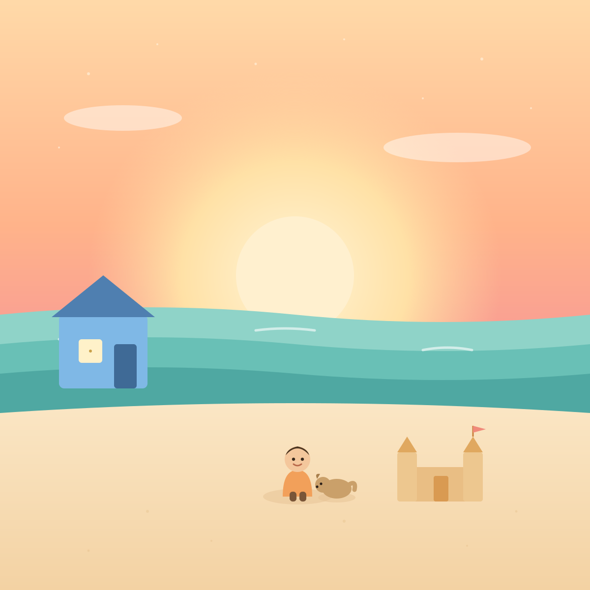

The Soulvers Library
Short, bilingual children's audiobooks — each one a five-minute story tied to a single emotional-intelligence skill, in English and Spanish. Produced end-to-end with an automated AI workflow that scales to five new stories every week.

Mateo and the Wave of Big Feelings
A boy learns to name his big feelings and breathe through them, the way waves rise and settle on the shore.

Lina and the Honey-Cake Secret
A girl discovers that a secret feels like a heavy little stone — and how telling the truth sets it down again.
How this was made
An automated, repeatable AI pipeline — the same workflow that can produce five short audiobooks every week.
Story & values
Claude drafts an original, age-appropriate story built around one emotional-intelligence skill, then translates it to Spanish.
Narration
Neural text-to-speech (ElevenLabs / Microsoft Edge Neural) voices each language at a gentle storytime pace.
Illustration
A matching cover and scene art generated and color-matched to the story's mood and palette.
Assemble & publish
Audio, art and read-along text are composed into a finished, shareable audiobook page — ready for video next.